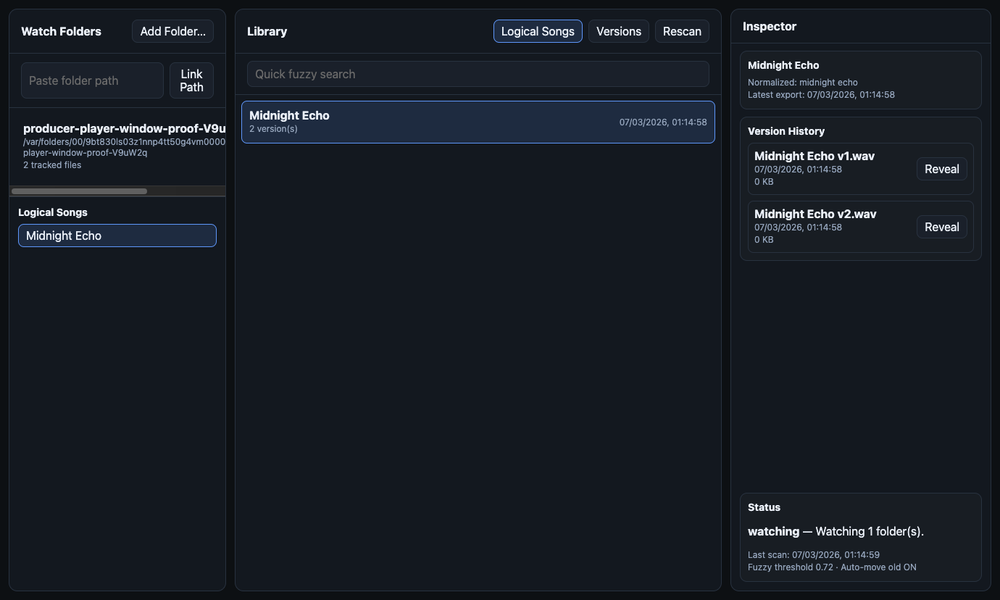
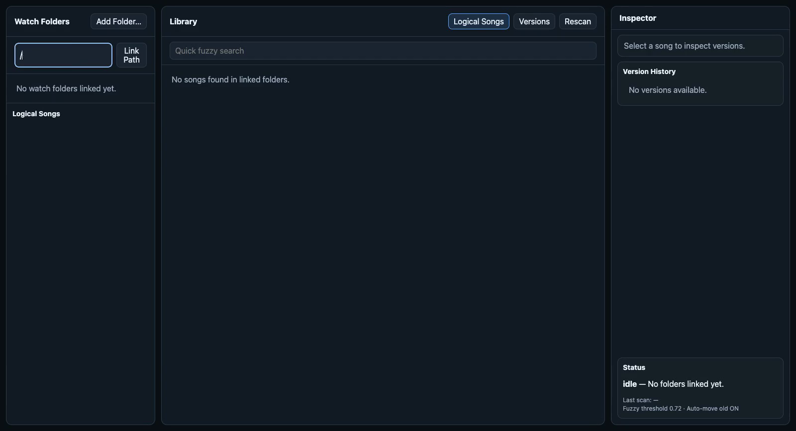
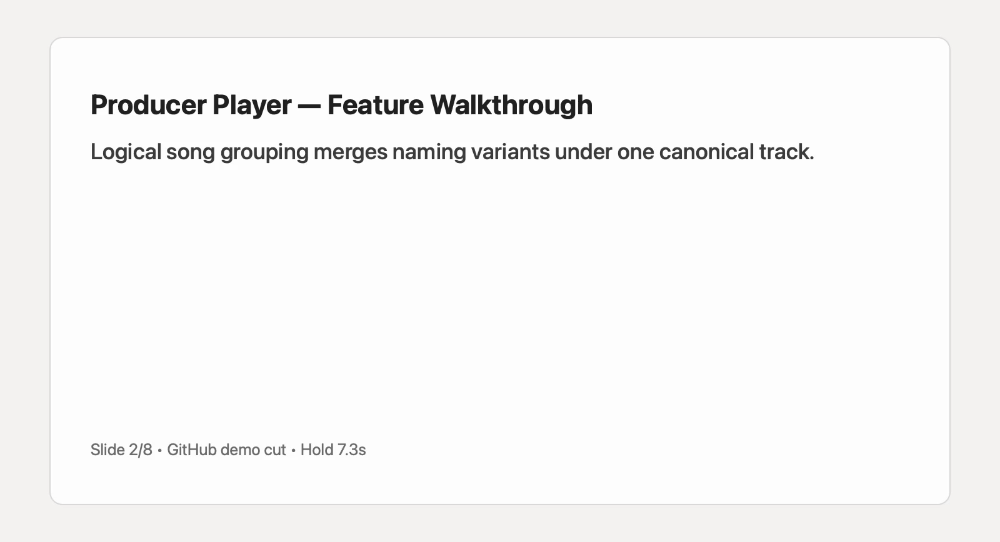

Track version grouping
Auto-clusters repeated exports into one track entry with multiple versions, reducing manual file cleanup.
Producer Player
Producer Player turns repeated exports into clean track version history, so you can compare quickly, keep context, and stay in creative flow.
Public repository: github.com/EthanSK/producer-player
Producer Player currently ships as two implementations in one repo: Swift MVP (existing) and a new Electron + TypeScript cross-platform slice. The Swift build remains untouched for baseline testing while the Electron app evolves toward broader distribution.
Auto-clusters repeated exports into one track entry with multiple versions, reducing manual file cleanup.
Link one or more export folders and refresh instantly on add/change/delete events.
Inspect active version state and version count in a dedicated right-hand panel.
Contracts/domain separation with shared types across Electron main process and React renderer.



Demo is committed in-repo and reachable from Pages once deployment succeeds.
Direct video URL: https://ethansk.github.io/producer-player/assets/demo/producer-player-demo.mp4
Producer-Player-<version>-mac-<arch>.zipProducer-Player-<version>-linux-<arch>.zipProducer-Player-<version>-win-<arch>.zip*.zip.sha256)Download from Releases (tag runs): github.com/EthanSK/producer-player/releases
Or download run artifacts directly from Actions: actions/workflows/release-desktop.yml
docs/RELEASING.md.# Local unsigned desktop packages
npm run release:desktop:mac
npm run release:desktop:linux
npm run release:desktop:win